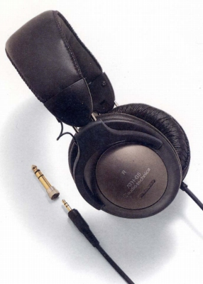

ATH-G5

■価格 6,600円■型式 密閉ダイナミック型■振動板 40�o傾斜型 23ミクロン厚ネオジウム■インピーダンス 40Ω■再生周波数帯域 20-23,000Hz■許容入力 1,200mW■感度 100ｄB/mW■コード 3.5ｍOFC ステレオミニプラグ/6.3mmアダプター付属■重量 235g（コード含まず）■発売 1994年9月■販売終了 1999年頃■備考 アルミ合金製ハウジング 1.2mコードのG5Sあり
テクニカのインデックスへ